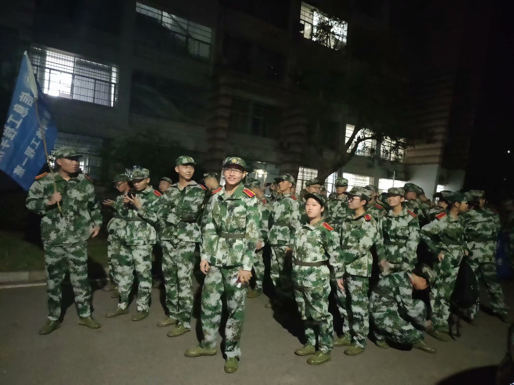

2019年9月20号晚上，第一次穿上了军训服，排着不整齐的队伍见了教官，也代表了我们为期17天的军训要开始了


我的军训生活
军训照片
记录军训生活
2019年9月20号晚上，第一次穿上了军训服，排着不整齐的队伍见了教官，也代表了我们为期17天的军训要开始了

2019年9月21号至10月6号，我们在教官的训练下，站军姿，踢正步，齐步走，在烈日下挥洒汗水，锻炼自己，以军人的要求来要求自己，我们成长了，强壮了也对自己更加严格了
.jpg)
在军训期间，我们参加了学校组织的铜官窑研学活动，这也是我们在军训期间的一次放松活动，我们观看了精彩的表演，也新认识了许多东西
.jpg)
2019年10月7号上午我们举行了会操，有团体操方阵，有军体拳方阵，有分列式方阵......各个方阵精神抖擞全力以赴

帅气又可爱的教官们
!!!!!!

军训感受
在这短暂的十七天里，我们尽情地磨练自己，挑战自己，严格要求自己。
军训期间开展的一系列活动，使我们加强了集体荣誉感和组织凝聚力，让我们体验到良好的团队合作精神和灵活应变技巧在我们今后实际工作中的重要性;立定、稍息、原地转向、齐步走、跑步走和正步走等训练项目，让我们体会到了在建设新世纪的社会主义现代化事业中必须具备艰苦奋斗、吃苦耐劳的优良传统。严格的管理、严谨的训练也增加了我们的自我约束力和时间观念。
军训是酸的。每天我们连续训练多个小时，昂首，挺胸，这些是最基本的要求。不用一天的时间，脖子、肩膀、手腕、腿都酸了。
军训是苦的。经过了几天的训练，腰酸背痛不用说了，大腿更是连走路都忍忍作痛。可这么一些劳累算得了什么呢?忍着痛，我仍尽力地将每一步走好，坚持到最后，虽然这当中包含着多少的艰苦。
军训是辣的。严明的纪律，在军营生活中必不可少，一不留神听错教官的口令或者完成不好标准动作就要被点名单独出列加操，脸上火辣辣的滋味真的不好受。
军训是甜的。用“苦尽甘来”四个字来修饰军训很合适。
阅兵场上，一排排整齐的“立”在上面的是一片绿色，太阳此时很准时地从地平线上升起，从山的顶部蹦出，发出耀眼的光芒，一缕缕阳光洒在这一排排迷彩上，形成了一道奇异的风景线，为这个世界增添了生机与活力。
一声声哨响，一阵阵踏步声，一句句口令声，奏出了属于军人的气质，奏出了军人的灵魂，更奏出了迷彩的本色，一顶顶帽子，一条条腰带，一套套军装，穿出了军人的生活，穿出了军人的习惯，更穿出了迷彩的本色。